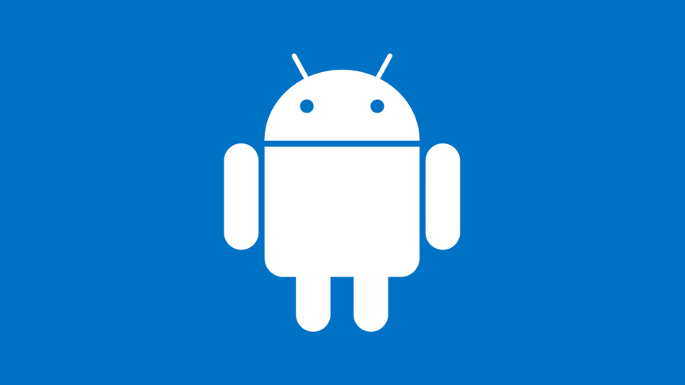
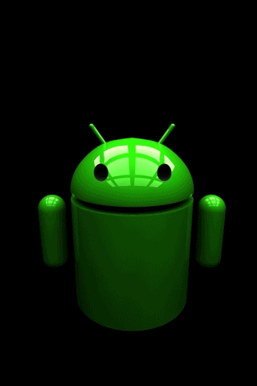

Resultado de imagen para android Android es el sistema operativo que utilizan algunos dispositivos móviles para poder funcionar. Es decir, se trata de todo aquello que puedes ver y con lo que puedes interactuar desde la pantalla de tu equipo.
Etimología Tanto el nombre Android (androide en español) como Nexus One hacen alusión a la novela de Philip K. Dick ¿Sueñan los androides con ovejas eléctricas?, que posteriormente fue adaptada al cine como Blade Runner (1982). Tanto el libro como la película se centran en un grupo de androides llamados replicantes del modelo Nexus El logotipo es el robot Andy.
